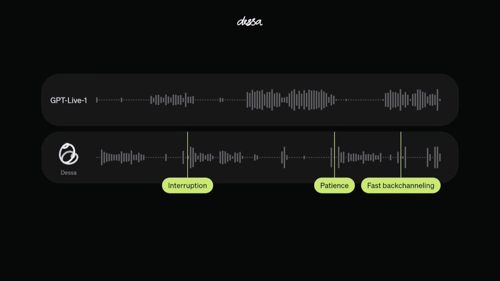
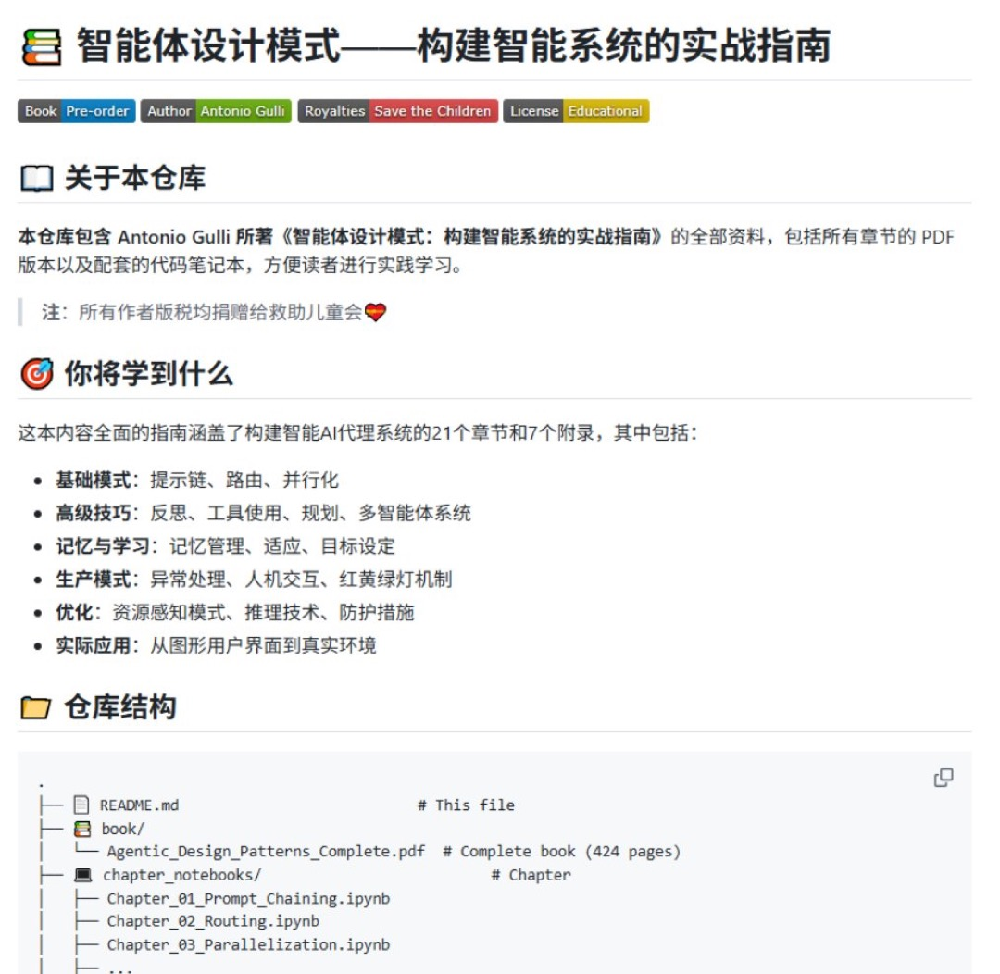
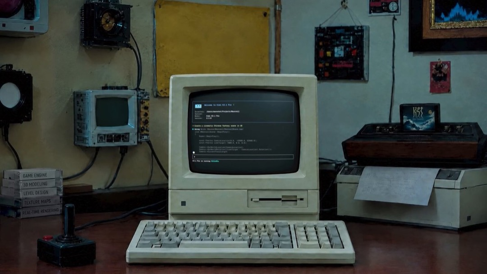

本期速览
01 Dessa纯语音模型支持Mac部署
02 出海应用合规陷阱与修复清单
04 3090借固件漏洞解锁算力提升80%
05 Postgres用UNLOGGED表做缓存
07 Kimi发布3T级K3.1 Pro模型
01｜Dessa纯语音模型支持Mac部署
来源（X） · @xiaomanhedy · 2026-10-24 10:29
我是真听不出来机器的味了，真的就像跟真人一样交流，打断的语气，说话的气息、重音、迟疑、自然流畅度，太牛了！
原帖 jack 还回复说，这个不是文本模型包装的，而是纯语音到语音（No LLM），并且小到能直接在 Mac 本地部署。
AI 交互的下一站，终于不再是聊天框了，就是不知道中文啥时候支持.....

引用内容
jack @jack
中文译文
我们相信语音是与智能交互最自然的方式，因此我们创建了 Dessa——迄今打造的最真实的全双工语音模型。与它对话就像与真人交谈一样……充满情感、微妙变化、停顿和自然的节奏。
https://block.xyz/dessa
原文
We believe voice is the most natural way to interact with intelligence, so we created Dessa, the most authentic full-duplex speech model ever built. Talking with it feels like talking with a person…full of emotion, nuance, pauses, and a natural cadence.
https://block.xyz/dessa
02｜出海应用合规陷阱与修复清单
来源（X） · @liangzhu_AI · 2026-10-24 15:26
很多人做独立开发出海，光顾着 Vibe Coding 狂飙功能，完全忽视了上线前的合规死穴。
海外有 2 个极其致命但常被忽略的法律陷阱：
1. 注册页不询问年龄：一旦有 13 岁以下儿童注册，直接踩中 COPPA 红线，每人最高罚款 5.3 万美元；
2. 网页字体远程直连：从谷歌官方服务器直接拉取 Google Fonts，在欧盟属于非法传输用户 IP，早已有被判赔偿的判例。
做产品出海，上线前必须做好两件事：加上年龄验证门槛，把所有第三方字体和脚本全部转为本地静态托管。
建议出海开发者存好这份避坑清单，别让合规漏洞吞掉所有利润。
Suraj Sharma给的解决方案：将此粘贴到Claude 👇
“审计我的应用，排查这6个法律风险并修复：为注册添加年龄验证，自行托管字体，关闭会话重放（或添加同意机制+输入屏蔽），为每封营销邮件添加退订链接和邮政地址，在订阅按钮旁直接显示续订条款，并指导我注册DMCA代理。”
03｜Google开源Agent设计模式教材
来源（X） · @ruyi3699 · 2026-10-24 00:14
作者是 Google 的 Antonio Gulli，全书共 21 章加 7 个附录，内容从基础一路铺到进阶：
① Prompt Chain、路由、反思
② 多 Agent、记忆管理、RAG
③ 安全护栏与 Agent 设计模式
④ 每一章都配了可运行的 Jupyter 代码
它并不只停留在理论层面，跟着 Notebook 一章章跑下来，概念更容易真正串起来。
另外，据项目方表示，书籍版税会全部捐给 Save the Children。
🔗 https://github.com/evoiz/Agentic-Design-Patterns

04｜3090借固件漏洞解锁算力提升80%
来源（X） · @lxfater · 2026-10-24 15:13
因为老黄的刀法被人破解了
有人给3090解了个锁，同样限制在 360W，PyTorch 测试从 75 TFLOPS 跑到了 135 TFLOPS，提升约 80%！
你以为是超频，把功耗往上拉？
但他改的是显卡里控制运算速度的寄存器，这些寄存器平时有权限保护，正常改不了
他利用 GPU 启动固件的漏洞，赶在 NVIDIA 驱动加载之前拿到写入权限，把相关运算改成全速，再交给原版驱动使用
解开的主要是 FP16／BF16 输入、FP32 累加这类 AI 运算的速度限制 但测试算力多了 80%！！
4090 也有分支项目做到了：同类运算的指令吞吐，从约 165 TFLOPS 提升到 331 TFLOPS，接近翻倍
项目地址，附上👇
https://github.com/Zagitta/gpu-unlock
05｜Postgres用UNLOGGED表做缓存
来源（X） · @realchendahuang · 2026-10-24 13:49
过去的技术圈讲究各司其职。
存传统关系表格用 MySQL，存半结构化文档用 MongoDB，做全文检索关键词用 Elasticsearch，处理地理测绘信息用专用的 GIS 系统，后来时序数据火了有 InfluxDB，最近大模型爆火又催生了一大批向量数据库。
结果大家一回头，Postgres+插件几乎把这些专精数据库的地盘全给蚕食了。
它原本就是关系型数据库，底座极其扎实，然后配上插件，那就是如虎添翼。
它推出了 JSONB，直接把文档存储干到了原生级别，让不少做文档数据库的人直挠头；
搞全文检索它有内置的倒排索引，普通规模下根本用不着再费劲搭一套搜索引擎；
搞空间测绘有行业标杆级的 PostGIS；
至于这两年大模型掀起的向量检索热潮，大家装上 pgvector 插件，连专用的向量数据库都不用买了。
几乎每一个细分领域，只要 Postgres 把触角伸过去，就能凭着极其成熟的插件生态和稳定性，把原本独立的数据库替换掉。
既然它这么能打，那我们在架构里挂了十多年的 Redis 缓存，能不能也被它顺手给彻底代替了？
要搞清楚这个问题，我们得先回到最原点：到底什么是 Redis 缓存，为什么我们一开始非要用它？
计算机硬件的世界里有一条铁律：离 CPU 越近的存储介质越快，但也越贵、越容易丢数据。内存拿数据的速度极快，通常只要几十个纳秒；而哪怕是现在最顶级的固态硬盘，读写速度也要比内存慢上成千上万倍。
我们平时用的关系型数据库，为了保证电脑突然断电时数据一颗都不丢，所有数据都必须老老实实写进硬盘里保存。这就带来了一个天然的瓶颈：
如果一个网站突然涌进来几万人，大家都去查同一个热门商品或者同一篇爆款文章，数据库就得拼命在硬盘里翻箱倒柜找数据。硬盘的寻址吞吐量一旦被吃满，后续的请求只能排队等候，用户端看到的现象就是网页一直在转圈，最后干脆直接超时报错。
为了保护脆弱的数据库，Redis 出现了。
你可以把 Redis 理解成摆在办公桌最顺手位置的一张便签纸。
它不搞复杂的多表关联，专门把数据放在纯内存里。每次有人来查热门数据，系统先看一眼便签纸；如果便签纸上写着现成的答案，直接照着念给用户，整个过程耗时连一毫秒都不到，底下的数据库根本不需要去翻硬盘。
只有当便签纸上没有记录时，系统才去硬盘里查一次，并顺手把结果抄到便签纸上供下一个人使用。这种把高频访问的数据预先放在超高速内存里的做法，就是缓存。
有了这张便签纸，系统的响应速度确实有了质的飞跃，但随之而来的是一套让人极度痛苦的副作用：
账本和便签纸怎么保持一致？
在真实的业务代码里，用户一旦修改了自己的昵称，你的程序就得做两件事：第一步，把硬盘主库里的账本改了；第二步，把内存便签纸上的旧昵称划掉或者换成新的。
可这两件事发生在两台完全独立的服务器上，走的是两条不同的网络通道。
万一网线抖了一下，或者程序刚改完数据库还没来得及通知 Redis 就突然崩溃了，灾难就发生了：硬盘里的数据是最新的，便签纸上的数据却是旧的。此后所有用户从便签纸上读到的全是错误信息，这就是臭名昭著的双写不一致。
为了解决这个毛病，程序员们发明了各种复杂的延迟双删、死信队列、甚至是专门去监听数据库底层变动的中间件，原本简单的系统被越搞越臃肿。
既然大家这么头疼，那全能的 Postgres 到底能不能把这张便签纸也收到自己屋檐底下？它是怎么做到的？
很多人一听到用关系型数据库当缓存，第一反应就是觉得荒谬：你个存硬盘的家伙，凭什么跟纯内存的 Redis 比速度？
但数据库写硬盘之所以慢，是因为每次写入提交时，必须把预写日志强制刷进物理磁盘，等待操作系统和硬件控制器确认。
而 Postgres 有一个非常绝妙的特性：允许你建立一种不记日志的表，叫做 UNLOGGED 表。
只要给表加上这个标记，Postgres 就会彻底关掉磁盘刷盘流程。所有的读写操作直接在它分配好的内存缓冲池里飞速流转，单次写入耗时直接从几毫秒断崖式下跌到零点零八毫秒，只比 Redis 纯内存的零点零五毫秒慢了几十微秒。
更巧的是，这种表如果遇到机器断电重启，里面的数据会自动被清空，物理特性天生就跟随时可以失效的缓存一模一样。
把缓存收回 Postgres 之后，双写不一致的Bug当场消失了。
以前改数据和删缓存是两码事，现在它们都在同一个数据库引擎内部。修改业务数据和清理缓存表，可以完完全全塞进同一个本地数据库事务里。
要么两件事一起成功生效，要么中间出一点岔子两边同时回滚，原子性被底层系统死死锁住，从物理机制上彻底断绝了账本和便签纸打架的可能。
更顺带的是，很多团队为了发通知、跑后台异步任务，往往会用 Redis 顺手搭个消息队列或者发布订阅系统。而在 Postgres 里，这些边角料功能它自己也早就有现成的解法。
比如防止多个后台工人重复抢活，它有行级锁跳过机制 SKIP LOCKED，多个进程同时抓任务时自动跳过正在被别人处理的行，完全不需要外挂分布式锁；要是工人中途挂了，本地事务回滚，任务自动重新放回待办。
再比如实时状态推送，它有内置的 LISTEN 和 NOTIFY 机制，数据写入成功的瞬间顺手触发通知，保证了通知和业务数据绝对同步。
哪怕把这些功能都补齐了，单用 Postgres 真的能跑得更快吗？
如果单看实验室里脱离真实业务的简单读写测速，Redis 确实稍胜一筹。但在真实的工程链路上，几乎没有哪个用户的操作是只读写一个键值的。
一个标准的业务动作打进来，往往需要先更新业务表，再跨网络去删掉旧缓存，最后再发一条通知给前端。
在过去，你的程序必须在自己的服务器、Postgres 服务器、Redis 服务器之间来回发起三次网络通信。光是跨机器的网络往返与握手等待，随随便便就吃掉三四毫秒。
而如果这一切全在 Postgres 的单连接内部搞定，你的程序只需要发过去一次请求，数据库在本地事务里把这三件事一气呵成处理完，全流程只要两毫秒左右。
省掉两次跨服务器的网络往返延迟，所带来的性能收益远远盖过了微观内存操作上那几十微秒的差距。
既然这么厉害，那为什么依然不能武断地说它可以完全代替 Redis？
因为物理定律从来不会被奇迹打破，真正的架构师必须一眼看穿天花板在哪里。
第一个无法逾越的天花板是极端高并发下的吞吐量。
Redis 的底层架构极其纯粹，它用单线程配合非阻塞的事件多路复用，就像一个只做单一动作的流水线机器人，单个核心一秒钟能纯靠内存吞吐几十万次请求。
而 Postgres 是典型的多进程架构，每一个连接都要占用操作系统独立的内存和进程上下文。当你的系统真的面临极端抢购，每秒有十几万次甚至几十万次并发涌入时，Postgres 的 CPU 会迅速被进程间的切换和调度压垮，这时候只有把 Redis 挡在最外层，才能死死护住底下的数据库不被瞬间冲塌。
第二个天花板是缓存的自动淘汰与数据膨胀。
Redis 的内存如果被填满了，它内置了精巧的淘汰策略，能在毫秒之间按设定的规则自动把最老的数据扔掉，始终把内存控制在安全水位。
而 Postgres 采用的是多版本并发控制，在它里面删除数据并不是立刻腾出物理空间，而只是把记录打上作废标记，全靠后台的清理进程慢吞吞地去回收。如果你的业务每天超高频地写入几千万个临时缓存又疯狂删除，后台清理一旦跟不上节奏，整个数据表在磁盘上就会迅速膨胀失控，最终拖慢整台机器的磁盘性能。
第三个天花板是专精数据结构。
Redis 并不只是个简单的键值抽屉，它里面专门用 C 语言实现了跳表支持的实时排行榜、支持几千万人在线去重统计的基数算法，还有各种位图运算。
如果硬要在关系型数据库里用 SQL 语句去给十万人做实时的积分排名，不仅语法别扭，消耗的算力也远比内存跳表昂贵得多。
对于绝大多数业务系统、单体应用或者初创项目，根本不需要直面几十万 QPS 的恐怖洪峰，也没有复杂的算法排行榜。
在这样的场景下，强行在架构里塞一个 Redis，往往只是照搬大厂教条换来的心理安慰，实际上却白白背负了翻倍的服务器账单和随时可能暴雷的双写一致性隐患。
把 Postgres 的能力吃透，用一张不记日志的表、一套本地事务和原生的并发机制，就能把缓存、队列和通知办得妥妥帖帖。
少开一个云实例，少维护一套高可用集群，少一个半夜把人叫醒的报警电话，整个系统往往反而更干净、更敏捷、跑得更稳当，才能不烧心。
06｜知识图谱扩至小初高并支持离线
来源（X） · @jinglian · 2026-10-24 11:35
短短几天狂揽近 3K Star 🌟
为什么这个项目值得持续关注？
我初次推荐时，它还只有初中数学的知识图谱。
现在一看，它已经直接打通了「小学到高中」的数学全链路！
甚至还顺手把物理和英语也加了进去。
💡 和作者交流后，我拿到了 3 个信息：
1️⃣ 绝对良心：个人学习与教学用途完全免费（CC BY-NC 4.0），商用需联系授权。
2️⃣ 持续扩张：更多科目正在紧锣密鼓地开发中（包括大家狂催的语文）。
3️⃣ 体验拉满：两大超强实用新功能刚刚上线 👇
✅ 一键添加到桌面（手机/电脑全支持）
不仅能像 App 一样在桌面秒开，添加后还能【离线查看】！
断开网络也能用，再也不怕开着流量让孩子玩手机分心了。
✅ 建立专属学生档案
系统会自动记录孩子的知识薄弱点，直接生成个性化学习建议。
这相当于白嫖了一个专属的智能辅导员。
开发出这个神仙项目的作者风清扬老师也在推上，大家可以去关注支持一波 👉 @hassanyehiaa
如果这个项目帮到了你，也请顺手去给开源库点个 Star。
🔗 知识图谱在线体验：https://math.pansgo.com
💻 GitHub 源码地址：https://github.com/xiaoyang111222/cn-math-taxonomy
引用内容
前端哥Liam @jinglian
完全免费，覆盖小学到高中
孩子数学跟不上，常常不是眼前这一章的问题，而是前面某个地方早就没学会。这个项目就是用来找出这个地方的。
🔹 覆盖极广：数学 828 个知识点、1366 条先修边，另包含英语（三年级至高中）和初中物理
🔹 题库扎实：三科共计 6723 道诊断测试题
🔹 紧贴大纲：全面对齐 2025 年修订的新课标与人教版新教材，目录全部经过国家智慧教育平台核对
除了知识体系专业，开发者的几个良心设计更是直接拉满：
✅ 极致便携：打开网页就能用，支持添加到手机桌面，甚至支持离线使用
✅ 绝对隐私：孩子的诊断档案只存在你的本机浏览器里，完全不上传云端
✅ 纯粹免费：非商用环境下完全免费使用（CC BY-NC 4.0）
在线试用：https://math.pansgo.com
GitHub：https://github.com/xiaoyang111222/cn-math-taxonomy
07｜Kimi发布3T级K3.1 Pro模型
来源（X） · @Kimi_Moonshot · 2026-10-24 01:20
中文译文
认识 Kimi K3.1 Pro，我们最强大的 3T 级模型。
原文
Meet Kimi K3.1 Pro, our most capable 3T-class model.
